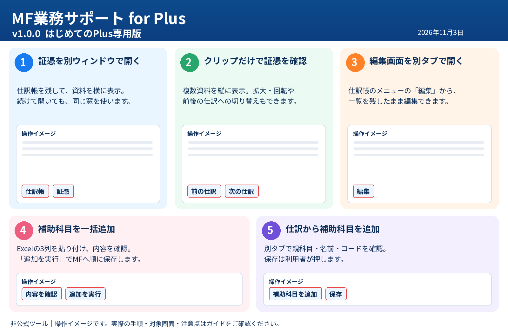
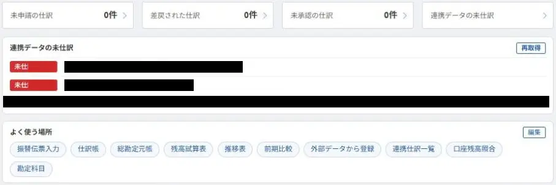
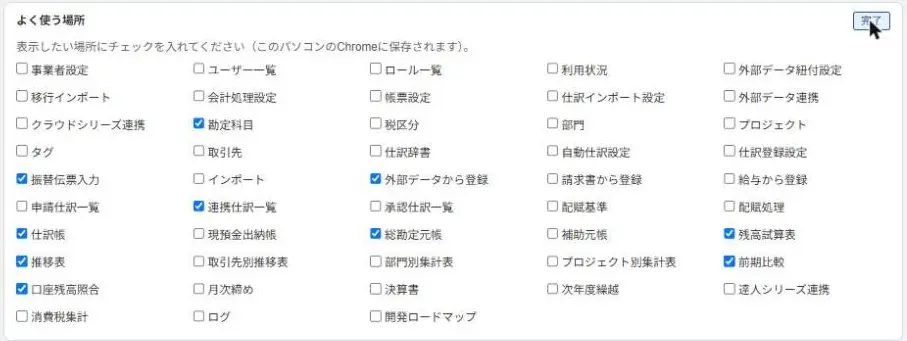

できること
「MF業務サポート for Plus」は、マネーフォワード クラウド会計Plusで使う非公式のChrome拡張機能です。通常のクラウド会計とは対象が異なります。
証憑を別ウィンドウで開く
仕訳帳を残したまま、証憑を横に表示できます。
02証憑ボタンを押すだけで開く
複数の資料を縦に並べ、前後の仕訳へ切り替えます。
03仕訳の編集を別タブで開く
一覧を残して、編集画面を別タブで開きます。
04補助科目の一括追加
Excelの一覧から、補助科目をまとめて登録します。
05仕訳の画面から補助科目を追加
入力中の仕訳を残して、補助科目の追加へ進めます。
06ホームの未仕訳とショートカット NEW
未仕訳件数と、よく使う画面へのリンクを表示します。
07口座残高の月別照合 NEW
差額がある月と明細を確認します。
08仕訳帳の一覧から直接編集 NEW
科目・税区分・部門・摘要などを一覧上で編集します。
09自動仕訳ルールの更新を初期オフ
既存ルールの意図しない更新を防ぐため、チェックを外します。
10適用ルールの確認
連携明細に一致する自動仕訳ルール候補を探します。

初回導入・更新方法
① 初めて導入する
- 担当者から受け取った
MF業務サポート_for_Plus_v1.3.0_初回導入・更新共通.zipをPCへ保存します。 - ZIPを右クリックして「すべて展開」を押し、展開した「MF業務サポート for Plus」フォルダを、今後も使う場所へ置きます。
- Chromeのアドレスバーに
chrome://extensions/と入力して開き、右上の「デベロッパー モード」をオンにします。 - 「パッケージ化されていない拡張機能を読み込む」を押し、
manifest.jsonが直接入っている「MF業務サポート for Plus」フォルダを選びます。 - 名前が「MF業務サポート for Plus」、バージョンが1.3.0であることを確認します。Plusの画面も再読み込みします。
ZIPのままでは読み込めません。導入後はフォルダを削除・移動・名前変更しないでください。
② 2回目以降の更新
- 担当者から最新版のPlus用ZIPを受け取り、別の場所へ展開します。
- Chromeの拡張機能管理画面で「MF業務サポート for Plus」の「詳細」から「ロード元」を確認し、現在のフォルダをバックアップします。
- 展開したPlus用フォルダの中身を、確認したロード元のフォルダへコピーして置き換えます。
- 拡張機能管理画面で「MF業務サポート for Plus」の再読み込みボタンを押し、バージョンを確認します。Plusのページも再読み込みします。
機能のオン／オフ
Chrome右上の拡張機能アイコン（パズルの形）から「MF業務サポート for Plus」を開き、使う機能にチェックを入れます。設定後はPlusのページを再読み込みします。各機能の初期設定を確認のうえ使用してください。
機能の使い方
証憑を別ウィンドウで開く
- Plusの仕訳帳で、証憑のクリップを押します。
- ファイルの一覧から証憑を押すと、別ウィンドウで開きます。「証憑ボタンを押すだけで開く」がオンなら、クリップだけで直接開きます。
- 別の証憑を開くと、同じウィンドウの表示が入れ替わります。
- 仕訳帳と証憑を並べて確認します。
この機能は開き方を変えるものです。仕訳・証憑の内容は変更しません。
証憑ボタンを押すだけで開く
- Plusの仕訳帳で、証憑のあるクリップを押します。
- その仕訳の証憑が、1つの別ウィンドウに縦に並びます。仕訳帳では、表示中の伝票が薄い青になります。
- 資料をスクロールして確認します。拡大・縮小、左右の回転、マウスでつかんで動かす操作も使えます。
- 上の「前の仕訳」「次の仕訳」、または標準の←・→キーで、証憑のある前後の仕訳へ切り替えます。
証憑の追加・削除をするとき
クリップの真下の「＋」、またはAltキーを押しながらクリップを押すと、MF本来の一覧を開けます。追加・削除はその画面で行います。
見やすくする操作
| 操作 | 方法・標準キー |
|---|---|
| 拡大／縮小 | 各証憑のボタン、＋（または＝）／－。50〜300%の段階表示。 |
| 100%へ戻す | 倍率の表示を押す／0キー。100%は画面幅に合わせた大きさです。 |
| 左／右へ回転 | 各証憑のボタン／L・Rキー。1回で90度回転。 |
| ホイール | 初期状態はスクロール。Ctrl＋ホイールで拡大・縮小。Zキーでホイールの動作を切り替え。 |
| 見たい位置へ移動 | 資料をマウスの左ボタンでつかんでドラッグ。 |
| キーの変更 | 上の「キー設定」→対象操作の「変更」→割り当てるキーを押す。 |
拡大・回転は表示だけの変更です。保存済みの資料は変わりません。倍率・向きは窓を閉じると元に戻り、キー設定とホイールの選択はこのChromeに保存されます。
仕訳の編集を別タブで開く
- Plusの仕訳帳で、編集したい仕訳の「︙」メニューを開きます。
- 「編集」を押します。
- 別タブに開いた編集画面で、内容を確認して修正・保存します。
- 元の仕訳帳へ戻ります。保存結果を一覧に反映するには、必要に応じて再読み込みします。
対象は仕訳帳の「︙」内の「編集」です。仕訳番号のリンク、Enterキーによる操作、総勘定元帳等の編集は対象外です。自動で仕訳を書き換えたり保存したりする機能ではありません。
補助科目の一括追加
- Plusの勘定科目設定を開きます。貸借対照表・損益計算書・製造原価のうち、追加する親科目が載るページを選びます。
- 「補助科目を一括追加」を押します。Excelで「科目名・補助科目名・コード」の3列を、見出し行を含めずコピーして貼り付けます。
- 「内容を確認」を押し、親科目・名前・コード・件数を確認します。コードは先頭の0が落ちないよう、Excelでは文字列で用意してください。
- 「追加を実行」を押します。追加できる行を1件ずつ保存します。完了件数とMFの一覧を確認してください。
| 科目名 | 補助科目名 | コード |
|---|---|---|
| 普通預金 | サンプル銀行 | 0010 |
上表は架空の入力例です。貼り付けるときはデータ行だけをコピーします。対象は開いているページの科目です。
仕訳の画面から補助科目を追加
- Plusの仕訳の登録・編集画面を開きます。補助科目が無い科目の「補助科目」欄を押すか、右下の「補助科目を追加」を押します。
- 補助科目名を入力してEnterを押します。右下のボタンから使う場合は、親科目・名前・コードを指定します。
- 別タブの勘定科目設定に「補助科目追加」の画面が開きます。親科目・名前・コードの候補・税区分を確認し、利用者が「保存」を押します。
- 元の仕訳へ戻ります。追加した補助科目が選べるか確認してください。
ホームの未仕訳とショートカット NEW
Plusのホームに連携データの未仕訳件数と、よく使う画面へのショートカットが表示されます。
- Plusのホームで「連携データの未仕訳」の合計とサービス別件数を確認します。
- サービス名を押すと、そのサービスの明細へ移動します。
- 「よく使う場所」の「編集」を押し、表示する項目を選びます。
取得できない場合は「取得できません」と表示します。ショートカットの選択はこのChromeに保存します。




口座残高の月別照合 NEW
口座残高と帳簿残高を月末ごとに比較し、差額がある日と該当明細を確認できます。
- 口座残高照合の一覧で「差額のある月を探す」を押すか、口座の詳細で「月別に照合する」を押します。
- 結果で月末の残高と差額を確認します。差額は帳簿残高から口座残高を引いた金額です。
- 「日別を見る」で差額が変わった日を確認し、「この日の明細へ」で明細に移動します。
取得できなかった月は「取得できません」と表示されます。一覧で複数口座を調べると数分かかることがあります。
仕訳帳の一覧から直接編集 NEW
仕訳帳の科目・補助科目・税区分・部門・摘要をダブルクリックし、その欄だけを修正して保存できます。仕訳番号の下の「編集」から仕訳全体を窓で編集することもできます。
- 仕訳帳で修正したい欄をダブルクリックします。
- 修正して「保存」を押し、反映された内容を確認します。
- 必要に応じて「元に戻す」を使います。修正履歴は30日間・新しい順に10件までです。
自動仕訳ルール更新チェックの初期オフ
「外部データから登録」で、既存ルールが適用された明細の「自動仕訳ルールを更新」を初期状態でオフにします。更新したいときは利用者がチェックを付け直せます。明細の登録自体は行いません。
適用されている自動仕訳ルールの確認
「外部データから登録」の「適用ルール」から、明細の摘要・入出金・金額に合うルール候補を表示し、MFのルール一覧を新しいタブで開きます。MFが適用したルールを直接特定する仕組みではないため、候補を必ず利用者が確認してください。
困ったとき・ご利用にあたって
- ボタンが出ない場合は、Plusの対象画面か、拡張機能と対象機能がオンかを確認して、ページを再読み込みしてください。
- 別ウィンドウが開かない場合は、Plusのサイトに対するChromeのポップアップブロック設定を確認してください。
- 補助科目の追加には、MF側で設定を変更できる権限が必要です。登録の途中で止まった場合は、保存結果を確認してから担当者へご相談ください。
- 画面の表示だけを変える機能と、MFへ保存する「補助科目の一括追加」を区別してお使いください。
- 拡張機能から生成AIへデータを送る機能はありません。証憑の取得などは、ログイン中のMoneyForwardへ通信します。
- 表示・機能の設定は、お使いのChromeに保存されます。別のPCへは自動で引き継がれません。
- MoneyForwardの画面変更により動作しなくなる場合があります。お困りの際は、ご案内した担当者へご連絡ください。
更新情報
v1.3.02026年11月9日
- 仕訳帳からの直接編集を追加。科目・補助科目・税区分・部門・摘要などを一覧上で修正できます。
- 自動仕訳ルール更新チェックの初期オフ、適用ルール候補の確認を追加しました。
直接編集は実際に会計データへ書き込むため、まず検証用事業者で試し、保存結果を確認してください。
v1.2.02026年11月上旬
既存機能の改善を実施。詳しい配布差分は本体の変更履歴で確認してください。
v1.1.02026年11月4日

v1.0.02026年11月3日
Plus専用パッケージと、この専用ガイドを用意しました。証憑表示・仕訳編集・補助科目追加に関する5機能を収録しました。
証憑表示と補助科目追加には開発者の実機確認記録があります。専用パッケージとしてChromeへ読み込む最終確認と、一部の細かい動作は未確認です。初回導入は担当者とご確認ください。